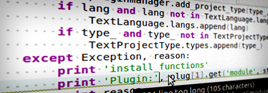
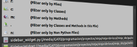
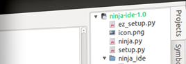

Ninja-ide Is Not Just Another IDE
NINJA-IDE (from the recursive acronym: "Ninja-IDE Is Not Just Another IDE"), is a cross-platform integrated development environment (IDE). NINJA-IDE runs on Linux/X11, Mac OS X and Windows desktop operating systems, and allows developers to create applications for several purposes using all the tools and utilities of NINJA-IDE, making the task of writing software easier and more enjoyable.
Some Features
-
Powerfull Code Editor
NINJA-IDE provides a complete code editor with highlighting for several languages, code completion, code assistant for: imports, navigation, etc. Also it is possible to extend the editor functionality using plugins.
-
Amazing Code Locator
This Feature allows quick and direct access to any file, function or class inside one of our projects by simply pressing a few keys. Pressing "Ctrl + K" we will see a popup over a text field, where you can type the name of what you want and done!
-
Errors and PEP8 Finder

Highlight Static and PEP8 errors in the document, you can also see that the files containing PEP8 errors are shown with an icon in the tab where the file is opened, and files containing code static errors are shown with a bug icon in that tab.
-
Project Managment
NINJA-IDE allows to manage Python Project automatically, saving descriptive information about them and letting the user to perform file managment related task in the IDE itself.
-
Run Project and Files

With NINJA-IDE it is possible to run Python Project or any file opened in the Editor with just one click. It is also possible to render an HTML file loaded in the Editor in the IDE to see how the changes would look like in a browser.
-
Highly extensible

You can create a Plugin for several purposes and it can be integrated completely with the IDE, increasing the functionality available to improve assistance for projects development.